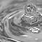
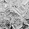

ANODIZED
WELCOME TO ANODIZED The process is called anodizing because the part to be treated forms the anode electrode of an electrolytic cell. Anodizing increases resistance to corrosion and wear, and provides better adhesion for paint primers and glues than bare metal does. Anodic films can also be used for several cosmetic effects, either with thick porous coatings that can absorb dyes or with thin transparent coatings that add interference effects to reflected light.
LUCTUS SODALES
Aluminium alloys are anodized to increase corrosion resistance and to allow dyeing (colouring), improved lubrication, or improved adhesion.Nullam luctus ullamcorper
Malesuada a amet
Acumsan sit porte
NULLAM ADIPISCING
Scelerisque risus tortor aenean
Eleifend parturient eget cubilla
Ligula metus viverra
Orci massa tempus
Uma nec metus
DIAM PURUM VARIUS
Magna natoque quam est gravida. Rutrum sociis massa accumsan vulputate velit.
Sapien quisque curabitur posuere
Enim sit a nunc
Dictum iacullis cubilia erat
Nulla semper libero tempus
Dictum iacullis cubilia erat
Nulla semoer libero tempes
Tempus curae impendiet
SUSPENDISE VALLIUS
Convallis al facilis donec fermentum consequat dui varius fermentum integer.
 Convallis al facilis donec fermentum consequat dui varius fermentum integer.
Convallis al facilis donec fermentum consequat dui varius fermentum integer.
Convallis al facilis donec fermentum consequat dui varius fermentum integer.
 Convallis al facilis donec fermentum consequat dui varius fermentum integer.
Convallis al facilis donec fermentum consequat dui varius fermentum integer.
BLANDIT INTERNUM VENENATIS LECTUS The process is called anodizing because the part to be treated forms the anode electrode of an electrolytic cell. Anodizing increases resistance to corrosion and wear, and provides better adhesion for paint primers and glues than bare metal does. Anodic films can also be used for several cosmetic effects, either with thick porous coatings that can absorb dyes or with thin transparent coatings that add interference effects to reflected light.
ULTRICIS SIACULES
Nullam luctus ullamcorper
Malesuada a amet
Acumsan sit porte